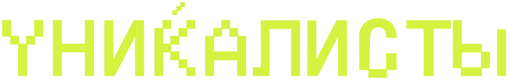

Действуй смело. Живи уникально.Если годами кажется, что живёшь не свою жизнь — ты не один. Уникалисты помогают найти свою тему, сделать первые публичные шаги и получить первых клиентов. Маленькими шагами, без обещаний быстрых денег.
Мы не мотивируем и не продаём мечту. Мы разбираем, что у тебя уже есть, и помогаем проверить это на реальности — спросом и первыми клиентами.
Ты не ленивый. Ты потерял контакт с тем, чего хочешь — и пока это не названо словами, никакие планы не держатся.
Опыт, интересы, то, что получается само. Это сырьё — из него собирается тема и первый оффер.
15–30 минут в день. Работу бросать не надо: второе дело достраивается рядом с первым, без резкого риска.
Собрал оффер — покажи людям и посмотри, откликнутся ли. Реальность честнее любых планов.
Я сам просидел в «не знаю, с чего начать» не один год — при работающем бизнесе и внешне нормальной жизни. Поэтому здесь нет лозунгов. Есть процесс, который видно. — Роман Гришин
Без гарантий суммКейсы — факт конкретного человека, а не обещание результата.
Без «сломай себя»Не ломаем тебя под чужую модель — собираем твою.
Без эзотерикиНикаких «вселенная пошлёт». Только действия и проверка на реальности.
Это не терапияЕсли сейчас совсем тяжело — это к специалисту, и это не слабость.
14 дней, одно задание в день. На выходе — твоя тема, первый микро-оффер и несколько публичных шагов, которые ты уже сделал. Сделал, а не запланировал.
Ждёшь готовых ответов и гарантированных сумм — их не будет. Будут вопросы и твои действия.
Совсем нет сил — тогда сначала отдых. Иногда это и есть первый шаг.
Хочешь изменить всё за две недели — за 14 дней меняется траектория, не жизнь.
Не курс, а среда: закрытое сообщество в телеграме и живые встречи. У каждого своя цель, но двигаться среди своих легче, чем в одиночку. Здесь находят соратников.
Называешь один шаг на неделю. Маленький — чтобы точно сделать.
Показываешь, что получилось. Черновики здесь не стыдно — их приносят все.
Что сработало, что застряло, что понял про себя за неделю.
Раз в месяц встречаемся вживую. Увидеть себя глазами других — а это и запускает изменения — по видеосвязи получается хуже.
ИИ-собеседник. Задаёт вопросы и возвращает тебе твои же слова — так, что ты наконец слышишь себя. Готовых ответов не даёт: они у тебя уже есть, просто спрятаны.
Первая версия сейчас в работе. Оставь почту — позовём попробовать, когда будет готово.
Хочу попробовать первымНапишем, когда откроется набор на побег, появится дата живой встречи или заработает Уникализатор. Никаких цепочек писем и прогревов — одно письмо по делу.
Оставить почту